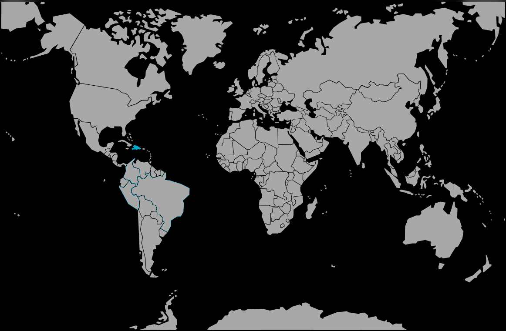

Systématique
- Ordre : Cyprinodontiformes
- Famille : Poeciliidae
- Sous-famille : Poeciliinae
- Genre : Limia
- Espèce : Limia tridens
Limia tridens est un petit vivipare endémique d’Haïti et de République dominicaine, au corps élancé orné de barres sombres et de reflets métalliques sur les flancs.
Les adultes atteignent environ 3–4 cm pour les mâles et légèrement plus pour les femelles, ce qui en fait une espèce adaptée aux bacs de taille moyenne bien plantés.
L’espèce est vive et se tient en petits groupes en zone médiane et supérieure, passant une grande partie de son temps à picorer algues, biofilm et petites proies sur les feuilles et le décor.
Globalement paisible, elle doit être maintenue en harem (un mâle pour plusieurs femelles) dans un décor dense en plantes et racines, afin de permettre aux femelles et aux jeunes de se soustraire aux poursuites des mâles.
Reproduction : vivipare; les femelles mettent bas régulièrement de petites portées d’alevins bien développés, souvent en nombre modéré mais de façon continue.
Une végétation fine et des plantes flottantes augmentent nettement le taux de survie des jeunes, qui trouvent refuge dans les zones de surface et les touffes de plantes.
Dimorphisme sexuel : mâles plus colorés, plus petits et pourvus d’un gonopodium; femelles plus grandes, au ventre nettement plus rond en période de gestation.
Biotope : lacs, rivières lentes, sources et bras calmes de systèmes fluviaux côtiers d’Hispaniola, souvent peu profonds, bien ensoleillés et riches en végétation.
Répartition
Origine naturelle :
- Île d’Hispaniola, en Haïti et en République dominicaine.
- Lacs, ruisseaux, sources et zones de faible courant, souvent proches des berges et très végétalisées.
Les eaux sont généralement chaudes, bien ensoleillées et peuvent présenter une minéralisation notable, avec parfois une légère influence saumâtre dans les zones côtières.
En aquarium, un bac lumineux, garni de plantes et d’éléments de décor offrant des zones d’ombre et des abris permet de reproduire ces milieux caribéens.
Paramètres de maintenance
Température : 24 à 29 °C, avec une valeur proche de 25 °C favorable à la reproduction.
pH : 7,0 à 8,2; une eau neutre à alcaline est recommandée.
GH : 10 à 20 °dGH, espèce adaptée aux eaux modérément à fortement minéralisées.
Courant : faible à modéré, avec une bonne oxygénation, comme dans les canaux et ruisseaux légèrement brassés.
Volume conseillé : à partir de 80 L pour un groupe, davantage si l’on souhaite maintenir plusieurs mâles ou d’autres vivipares.
Régime alimentaire
Régime : omnivore; accepte paillettes, granulés, compléments végétaux et nourritures vivantes ou congelées de petite taille (artémias, daphnies, micro‑vers, etc.).
Un apport régulier en végétaux (spiruline, légumes pochés) et en petites proies vivantes ou congelées favorise une bonne santé, une belle coloration et une reproduction régulière.